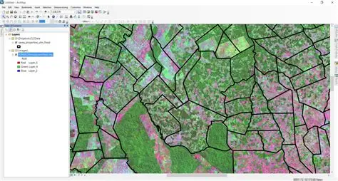

01 · PREPARE
Web-ready spatial layers
Clean and structure GIS layers, attributes, symbology inputs and metadata for the selected web mapping environment.

We help prepare and organize geospatial data for web-based viewing and operational use, with attention to data structure, layer behavior, map navigation and clear user workflows. Scope can range from publishing-ready datasets to implementation support for a client’s WebGIS platform.
 POINT CLOUD
ENGINEERING DATA
GIS INTELLIGENCE
POINT CLOUD
ENGINEERING DATA
GIS INTELLIGENCE
A good WebGIS experience starts with reliable spatial data and clear use cases. The map should help users locate features, understand attributes and follow a repeatable task without overwhelming the interface.
Clean and structure GIS layers, attributes, symbology inputs and metadata for the selected web mapping environment.
Support layer grouping, attribute popups, search fields, filters and feature-navigation requirements defined for the project.
Review layer visibility, coordinate alignment, attribute readability and basic usability on desktop and mobile-sized layouts.
Useful WebGIS depends on prepared spatial layers, an understandable interface and controlled access to the right information. We can prepare datasets and support client-defined publishing workflows.
Normalize schemas, CRS, geometry, naming and metadata. Decide which fields, scales and feature groups should be visible to each audience.
Organize layer toggles, feature popups, basic search, filters and map navigation around real tasks such as asset lookup, inspection planning or project review.
Choose suitable formats, tile or simplify large datasets where appropriate, document refresh needs, and make access permissions and data ownership explicit.
Agree who will use the map, which datasets may be public or restricted, expected device support, update frequency, performance needs and the client's hosting/platform constraints.
Illustrative outputs from related geospatial workflows. Final deliverables are agreed to the project specification.


Hosting, authentication, production integrations and ongoing support are scoped separately based on the target platform and client environment.